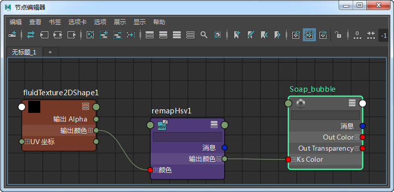
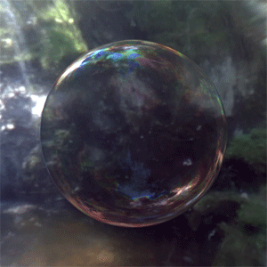

*standard_surface.thin_film* 也可用于创建气泡着色效果。
本教程介绍如何对肥皂泡进行着色以呈现出旋转的彩虹色效果。可以使用 fluidTexture2DShape 实现此效果。此场景文件包括一个连接到 standard_surface.specular_color 的 fluidTexture2DShape。
要下载对应的场景，请单击此处。

fluidTexture2DShape -> specular_color
您必须播放动画时间滑块才能看到 fluidTexture2D 效果。
|  | ||
| 更多示例 |
感谢 Duncan Brinsmead 为我们提供其原始 fluidTexture2DShape 纹理。